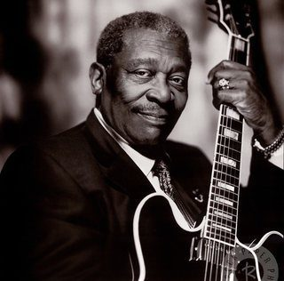

America’s music culture would be incomplete without
blues music. Thought it was created in the early decades of the 20th century,
blues music has had a huge influence on American popular music
up to the present days.
#music #america #bluise
Leopold
Kids, let's all get along!
#friendly #cat #sweety
Dickens
There is nothing in the world so irresistibly contagious as laughter and good humor.
#reflections #thinkaboutit
The best known blues musician today is B.B. King. His fame is well-deserved.
Born in Indianola, Mississippi in 1925, he earned the nickname "B.B." ("Blues boy")
while playing on radio programs in Memphis, Tennessee.
#king #enjoy #bluise

IU
When I was young, even though I received so much love,
I used to pay attention to people who disliked me. That's why my lyrics were so sharp and dark.
#love #lyrics
Sean C
I just think the most difficult thing to displace is privilege.
#reflections
Leopold
I cooked dinner from jars of food that I opened myself.
#dinner #power
Ariana G
Meditation is a great way to keep my body well-centered while juggling shooting schedules and recording sessions.
#meditation #join #health
IU
I think I fell in love with Singapore.
#singapore #travelling
Grif Hero
We are the heroes of our time!
#heroes #infinite